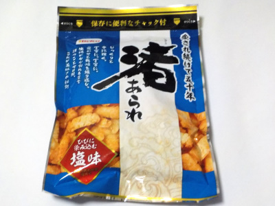
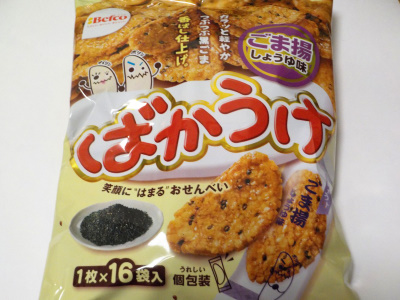

栗山米菓の渚あられ(ひびに染み込む塩味)
2023/07/07

パッケージによると、愛され続けて50年らしいです。
このあられは硬くて、塩味がよく効いています。なんでこんなに硬いの？って思ってしまいました。
近頃サクサクしてて軽い感じのあらればかりを食べてたってことに気付きました。
こっちの硬いあられの方がもち米の味がしっかりあっていいですね。
もち米はタイ産と国産が使われています。タイ産のもち米はカオニャオが使われているのかな？
新潟県新潟市北区新崎2661番地
2023/07/07

パッケージによると、愛され続けて50年らしいです。
このあられは硬くて、塩味がよく効いています。なんでこんなに硬いの？って思ってしまいました。
近頃サクサクしてて軽い感じのあらればかりを食べてたってことに気付きました。
こっちの硬いあられの方がもち米の味がしっかりあっていいですね。
もち米はタイ産と国産が使われています。タイ産のもち米はカオニャオが使われているのかな？
2022/12/16

しょう油とゴマでとっても香ばしいせんべいです。砂糖の甘さも入ってちょっと濃い味。飲み物がすすむ美味しい御煎餅ですね。
お茶でもお酒でも合いそうです。
原材料のお米が米国産、豪州産、国産と国際的な商品になってます。ブレンドすることでより美味しい御煎餅になっているかもしれませんね。